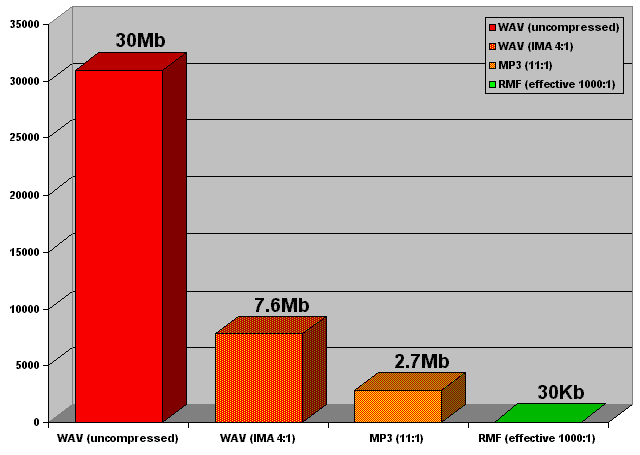

|
If you have a question that is not answered in this FAQ, or you are having difficulty with something which you feel is not explained inside the documentation, please consult the online Music Object help page.
| Which browsers does Beatnik support? |
Beatnik supports the most popular browsers on a variety of platforms. For the complete list of browsers that are supported by the Beatnik Player and the Music Object API, please consult the appendix Supported Browsers.
| How widespread is the Beatnik audio technology? |
The Beatnik Audio Engine has a very wide adoption, ranging from set-top boxes (such as Microsoft's WebTV and Oracle's NC) to powerful programming languages (such as Sun Microsystem's Java technology). Historically, the Beatnik Audio Engine has also been used in dozens of games and applications, including music applications such as the Xx sequencer from U&I software, creators of MetaSynth.
Adoption of the Beatnik Audio Engine is growing as Beatnik Inc. makes strategic deals with emerging platforms. One early adopter of the Beatnik Audio Engine is the BeOS operating system, which now has native support for the playback of RMF music.
| How big is a typical RMF file? |
There is, of course, a wide range in the sizes of RMF files. How small you can make an RMF file really depends on the arrangement skills and ingenuity of the composer. By carefully combining the instruments in the Beatnik Player's built-in soundbank with finely crafted custom instruments, it is possible to get great-sounding CD-quality RMF files that play for 5 minutes or more, but are as small as just 50Kb. A similar piece of music compressed using linear streaming audio (such as MP3) could easily be as large as 5Mb - over 100 times the filesize!
In the same way that one cannot simply convert a digital video format into Macromedia's Flash format in order to achieve the file size economy of vector-based graphics, one also cannot simply convert a linear digital audio file format into RMF in order to achieve the file size economy of structured audio. While it must be stressed that RMF is not simply a compression algorithm and one cannot simply convert a linear digital audio file to a structured audio RMF file, it is possible to achieve phenomenally small file sizes when RMF files are composed "from the ground up".
The following chart illustrates this stark contrast in file sizes between structured audio RMF format and linear digital audio file formats...
3 minutes of music playing at 44.1KHz, 16bit, stereo

| How big is the Beatnik Player download? |
For the majority of users who encounter Beatnik-enhanced Web content for the first time and do not have the Beatnik Player already installed, the download is quite small - around 600Kb. With a typical 56K modem over a phone line, the complete installation process can take as little as 3 minutes - a small price to pay in order to experience rich sonified Web content. And users who are fortunate enough to have ISDN, DSL, cable modem, or T1 connections can expect an even faster download and install. In addition to being a small download, both the installation process for Netscape Navigator 4.x (and higher) and Microsoft Internet Explorer 4.x (and higher) can take place without the user even having to quit the browser.
| What file formats does the Beatnik Player support? |
To get a comprehensive listing of the file types supported by the Beatnik Player, please consult the Appendix Supported File Types.
| What is RMF? |
RMF is an abbreviation for "Rich Music Format" - a hybrid file type devised by Beatnik Inc. that encapsulates structured audio data, custom audio samples, and information for copyright protection. An RMF file is encrypted in such a way that a downloaded RMF file cannot be loaded into a music sequencer and edited and then represented as someone else's original work - a risk which is of great concern to creators of original musical content. Beatnik Inc. offers extensive licensable RMF Collections for Web content developers.
| How does one make an RMF file? |
RMF files can be created using the Beatnik Editor or the Beatnik Converter. If you are looking for great sounding, high quality RMF music to use in your sonified Web sites, Beatnik Inc. also offers extensive licensable RMF Collections.
| What are Groovoids? |
Groovoids are tiny files which play useful sound effects, fanfares, bumpers, stingers, and "music on hold" loops. Over 70 Groovoids ship within the Beatnik Player! This means that any Web client can trigger any Groovoid with some simple HTML or JavaScript code, without initiating a download over the Internet. The Beatnik Player can therefore instantly respond to clicks, mouseovers, links, "submit" buttons, and any other events that can occur within an HTML page.
| How is the Beatnik Player interactive? |
The Beatnik Player offers a full complement of interactive scripting capabilities through the Music Object API. Any piece of RMF or MIDI music can respond to realtime manipulation and can change tempo, key, instrumentation, mix, or song structure. Multiple themes can be layered. Individual notes, events and sound effects can be triggered through scripting. The possibilities are astounding.
| Can the Beatnik Player be synchronized with other browser components, such as Macromedia Flash? |
Yes, the Beatnik Player can be controlled from within a Flash movie, for example, by using Flash's FSCommand feature. Once an instruction is sent from a Flash movie to the scripting layer inside the host HTML page, further instructions can be relayed to Beatnik Player instances that are embedded in the same page, using the Music Object API. For further details on using Beatnik to sonify Flash movies, consult the section Using Beatnik and Flash Together.
| Can you talk to the Beatnik Player from Java applets? |
Beatnik Inc. does not advocate or promote using the Beatnik Player to sonify Java applets, primarily because this technique is only supported in Netscape Navigator and is not supported in Microsoft Internet Explorer (which represents a large number of the installed browsers). Moreover, there is already a solution provided for sonification of Java applets - the JavaSound API. In fact, the same Beatnik Audio Engine that provides the core functionality of the Beatnik Player was also licensed to Sun Microsystems for integration into their Java programming language.
As far as Web site sonification is concerned, Beatnik Inc. is working to promote one common authoring API - the Music Object API. Set-top boxes, such as Microsoft's WebTV and Liberate Technologies' TV Navigator, are enthusiastically embracing the Music Object API. In the set-top box worlds, the sonification scripting is also done using JavaScript as is the case with desktop Web browsing applications, such as Netscape Navigator and Microsoft Internet Explorer.
| Can a player instance play more than one music file at the same time? |
It is only possible to play one file at a time through a player instance. So, for example, it is not possible to fade one piece of music out while another piece fades in, using just one player instance. In order to achieve this effect, one would need to use two different player instances, with one playing the file that is fading out and the other playing the file that is fading in. To understand this, it is best to think of the Beatnik Player as though it were a typical CD player in a home stereo system. In order to put a new CD in, it is necessary to take the currently playing CD out first. You can't fade between the two CD's using just one CD player.
Now, it is possible to have an almost unlimited number of player instances on any HTML page, with as many as 16 players actually playing music at any given time. So, by adding a little bit of scripting wizardry, it should be no problem to use two player instances to achieve a cross-fade effect between two music files.
| If the Music Object basic core component is already cached, will other pages that use the full "music-object.js" file load in faster? |
If the end-user visits a sonified Web page that is using only the Music Object basic core component file "music-object-c-basic.js" and they then subsequently visit a page that uses the full Music Object API file "music-object.js", the page using the "music-object.js" file will not load in faster simply because the core component was loaded and cached by the first page the user visited. Even though the "music-object.js" file contains the code that is inside the "music-object-c-basic.js" file, to the Web browser these two files are completely distinct.
In cases like this, however, one can achieve an economy if the pages that are sonified using the full Music Object API source in the three core components that make up the Music Object API: "music-object-c-basic.js", "music-object-c-advanced.js", and "music-object-c-compatibility.js". Then, having the "music-object-c-basic.js" file already cached will actually speed up the loading of the page, since only the "music-object-c-advanced.js" and "music-object-c-compatibility.js" files will need to be loaded.
For more information, consult the section Music Object Core Components.
| If I'm creating an extremely basic sonified page, can I make a custom version of the "music-object.js" file that only has the features I need? |
Under no circumstances will Beatnik Inc. offer support or assistance to individuals who are trying to create custom edited versions of the Music Object API. That said, however, starting at version 3.2.0 the Music Object API has been componentized into three core components that can be used together in various combinations. In certain cases, and depending on the features needed for a page's sonification, it is possible to use only the basic core component, or the basic and compatibility core components together, thereby reducing the load time overhead of the sonified page. To find out more about using the core components, consult the section Music Object Core Components.
In addition to this level of customization that is provided by the core components, and which is officially supported by Beatnik Inc., there is also an advocated and condoned way for making custom Music Object suites if you wish to combine Music Object extensions, patches, and language modules together into one JavaScript file for your authoring convenience.
| What is an RMFX file? |
See the glossary entry for RMFX.
| If someone visits a sonified Web site, does the "music-object.js" file get cached so that it doesn't download again when they visit other sonified Web sites? |
While the "music-object.js" file does get cached by the browser after it loads in for the first time, unless multiple Web sites are sharing the exact same copy of the "music-object.js" file from a central URL, there will not be a savings when browsing multiple sonified Web sites. In this respect, the "music-object.js" file behaves like any other piece of media that is used by a Web site. For example, two Web sites could be using a graphic called "home-button.gif", but unless the two sites are referencing the exact same URL in the IMG tag's SRC attribute, the two "home-button.gif" files will be assumed by the browser to be different files. The browser makes no comparisons and makes no judgements on whether or not the graphic files are identical.
This said, however, it is possible to ensure that the "music-object.js" file (as well as other Music Object extensions, patches, and language modules) is only downloaded once for all sonified pages on an entire Web site. To do this, simply make sure that all sonified pages on a site source in the file from a centralized folder of the Web site, such as a "javascript" folder that's at the root of the site's directory structure.
| Why does my Web page that is sonified using the Wizards extension not work in Netscape 6? |
With the initial release of Netscape 6, it was discovered that this browser had a significant issue that could cause the automatic sonification of HTML elements (using the Wizards extension) to interfere with other aspects of the proper functioning of HTML pages. Because of this problem, a mechanism was put into place in the Wizards extension so that automatic sonification using this extension is disabled, by default, for Netscape 6. For more detailed information on this issue, consult the section Authoring Issues: Netscape 6 and Automatic Sonification
For answers to more questions, please consult the online Music Object help page.